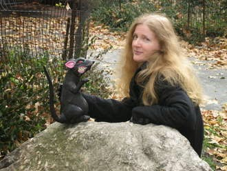

Okay, the rat is fake. Read below to see why..."
Here is an interview that I did with Jen Rees at Scholastic Press:
1. Of all the places Gregor could have traveled to, why the Underland?
I liked the fact that this world was teeming under New York City and nobody was aware of it. That you could be going along preoccupied with your own problems and then whoosh! You take a wrong turn in your laundry room and suddenly a giant cockroach is right in your face. No magic, no space or time travel, there’s just a ticket to another world behind your clothes dryer.
2. Is there anything you find/found difficult or challenging in writing from the perspective of an 11-year-old boy?
I remember being eleven very clearly and I had a lot of friends who were boys so it felt pretty natural being in Gregor’s head.
3. Are you anything like Gregor?
I think I’m like Gregor because we both want to do the right thing but sometimes have trouble figuring out what it is. Also, neither of us likes to ride roller coasters and we’ve both changed a lot of diapers.
But Gregor is much braver than I am…if I even see a regular sized rat in New York City I immediately cross the street.
4. What kinds of things did you enjoy doing when you were 11?
Gymnastics, like Luxa. Reading. Running around in the woods with my friends.
5. Many people think bats, rats, cockroaches, and spiders are creepy! Did you have to get over your fear of any (or all!) of them to write this story?
I wish I could say that after I researched the creepy animals I was no longer at all afraid of them…but that would be a big fib! Cockroaches aren’t really scary, just a little germy, so I don’t mind them much. I love bats…except these really loud ones that get in my attic in the summer and hold some kind of party all night long. Spiders still scare me some, although I’m also fascinated by them and I can happily watch them from a distance. But rats…not pet rats but the wild kind…I will always have what I consider to be a healthy fear of rats. You should, too.
6. Are you kinder to cockroaches, bats, rats, and/or spiders nowadays?
I don’t think I was ever particularly unkind to them…but I do have more of a connection with them now. I’m more aware of their similarities to humans. And I’m sympathetic to their desire to survive, which all creatures share.
7. Did you have a sibling who, like Boots, got you into a world of trouble?
I have two older sisters and one older brother and hold them largely responsible for the trouble I got into growing up. I believe as the youngest child, that is my right.
8. Have you ever lived in New York City?
I lived in New York City for 16 years, from 1987 to 2003. But when I was growing up we moved all the time because my dad was in the Air Force. We were mostly on the eastern half of the U.S. and in Europe but, like Gregor, I definitely know what it feels like to be a stranger somewhere.
9. If you had to go to the Underland, what items would you take along with you? And who would you take with you?
I’d take all the flashlights and batteries I could find. I’d also take a couple of bottles of water and chocolate, because I don’t like traveling without either of these things. I would wear very comfortable clothes and sneakers…in case I had to run.
My husband, Cap, would be great to have in the Underland, since he is very good in an emergency, but I’d want him to be with our kids up in the Overland so I’d know they were in safe hands.
(Note: Cap says he would not take me to the Underland because I am not good in an emergency and I would constantly make him stop and ask for directions. Both of these things are true.)
So I think I would take my good friend Christopher Santos with me, because he is very diplomatic and travels a lot and he seems at ease in foreign places. Also, he would never make loud, mean remarks about the creatures which could get a person in all kinds of trouble.
In the Underland, I would make it my first order of business to hook up with a couple of bats because, let’s face it, without a bat you’re probably going to end up as someone’s lunch.
10. Have you ever been lost and wanted to find your way home?
All the time. I have a terrible sense of direction. I get lost practically every time I leave my house. Fortunately, people are usually very kind about giving you directions if you ask politely.